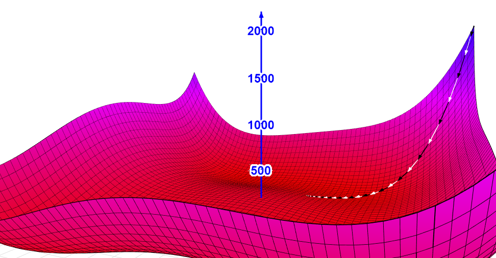

Optimization is a core subject in ML.
What do we mean by optimization?
In the context of ML, optimization is an iterative process of attempting to (typically) minimize a real valued function. Real valued functions come into play in ML as loss functions – functions that assess the performance of whatever ML construct (classifiers, self-driving cars, etc.) we want to create.
